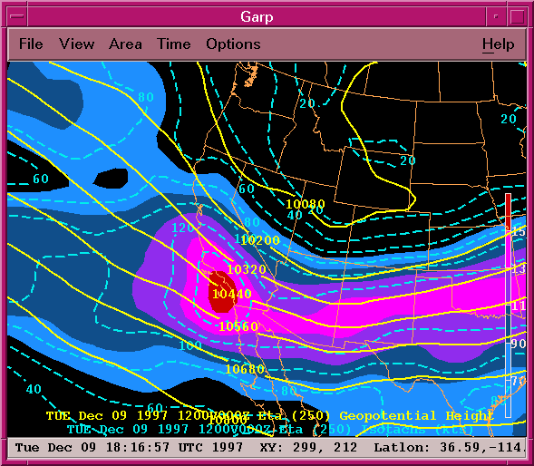

What Is Garp?
GARP (GEMPAK Analysis and Rendering Program) is an X-Windows/Motif
software application designed by the
COMET staff for the display and
analysis of meteorological data sets. Supported data sets include
model data like the Eta, NGM, and RUC, satellite imagery in NOAAPort GINI
format or MCIDAS area file format, NIDS radar and radar mosaics, surface
observations, and upper-air data.
